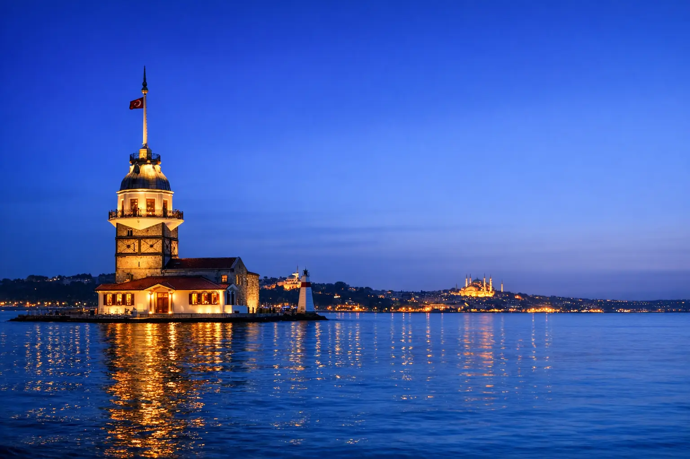

Yardım Merkezi
Sık Sorulan Sorular
Rezervasyon, seyahat ve vizeyle ilgili en sık sorulan soruların cevaplarını bir araya getirdik. Cevabı bulamadınız mı? Bir mesaj uzaklığındayız.
Rezervasyon ve ödeme
OYA Tourism ile nasıl rezervasyon yaparım?
Talebinizi WhatsApp veya sitedeki formlar üzerinden gönderin; size ayrıntıları ve fiyatı içeren yazılı bir teklif gönderelim. Onayınızdan sonra rezervasyonları onaylar ve belgelerinizi iletiriz.
Teklifi almadan önce ödeme yapar mıyım?
Hayır. Önce yazılı teklifi alır, ayrıntıları ve iptal koşullarını inceler, sonra karar verirsiniz. Mevcut ödeme yöntemlerini onay sırasında açıklarız.
İptal ve iade politikası nedir?
Otele, havayoluna, hizmete ve sezona göre değişir; bazı rezervasyonlar esnek, bazıları iade edilemez. Koşulları, herhangi bir ödemeden önce teklifle birlikte yazılı olarak göndeririz.
Rezervasyon onaylandıktan sonra değiştirilebilir mi?
Evet, çoğu durumda hizmet sağlayıcının koşullarına göre; değişiklik için iletişimi sizin adınıza biz yürütürüz.
Türkiye'ye seyahat
Türkiye'ye girmek için vize gerekli mi?
Pasaportunuzdaki uyruğa bağlıdır. Suudi Arabistan, BAE, Kuveyt, Katar, Bahreyn, Umman, Ürdün, Lübnan, Tunus ve Fas vatandaşları 90 güne kadar vizesiz giriş yapabilir; diğer uyruklar e-Vize veya konsolosluk vizesi almalıdır ve bazılarında kural yaşa göre değişir. Her uyruk için ayrıntılar Arap ülkesi vatandaşları için Türkiye vize rehberindedir.
Türkiye'de yemekler helal mi?
Türkiye nüfusunun çoğunluğu Müslüman olan bir ülkedir ve restoranların çoğu helal et sunar, özellikle turistlerin çok uğradığı bölgelerde. Yine de uluslararası restoranlarda ve otellerde sormanız iyi olur.
Türkiye'de hangi SIM kartı almalıyım?
Başlıca Türk operatörlerinin SIM kartları havalimanında ve şehirlerdeki merkezlerinde satılır; pasaportunuzla resmî merkezlerden almanızı öneririz. Bazı programlarımızda sizin için SIM kart ayarlayabiliriz.
Hangi para birimi kullanılıyor ve nasıl bozdururum?
Para birimi Türk lirasıdır. Turistik şehirlerde döviz büroları yaygındır ve çoğu mağazada banka kartı kabul edilir. Döviz kurlarını karşılaştırmanız ve havalimanında büyük miktarda bozdurmaktan kaçınmanız önerilir.
İstanbul'da nasıl ulaşım sağlarım?
Metro, tramvay ve vapur seçenekleri var; ödemeyi “İstanbulkart” ile yaparsınız. Ancak aileler için özel şoförlü araç en rahat seçenektir ve programlarımızda bunu sağlıyoruz.
Türkiye aileler için güvenli mi?
Türkiye, en çok aile ağırlayan destinasyonlardan biridir ve her büyük şehirde olduğu gibi kalabalık yerlerde eşyalarınıza dikkat etmeniz ve güvenilir firmalarla çalışmanız önerilir.
Oteller ve programlar
Programlara uluslararası uçuşlar dahil mi?
Varsayılan olarak dahil değildir, ancak teklife eklenebilir.
Şoförler hangi dilleri konuşuyor?
Şoförlerimiz Türkçe, İngilizce, Arapça ve Rusça konuşuyor; programlarımızdaki tur ve transferlerde özel şoför sağlıyoruz.
Özel bir program talep edebilir miyim?
Elbette, tüm programlarımız değiştirilebilir ve talebinize göre tamamen yeni bir program tasarlayabiliriz.
Vize ve maç biletleri
Vizenin onaylanacağını garanti ediyor musunuz?
Hayır. Vize verme kararı yalnızca resmî makamlara aittir; bizim görevimiz doğru ve eksiksiz bir dosya hazırlamak ve takip etmektir.
Vize veya bilet düzenleyen resmî bir kurum musunuz?
Hayır, OYA Tourism; hazırlık, rezervasyon ve takip hizmetleri sunan bağımsız bir seyahat acentesidir. Devlet kurumu değildir ve kulüplerle veya federasyonlarla bağlantısı yoktur.
2027 İspanya Süper Kupası İstanbul'da ne zaman oynanacak?
İspanya Futbol Federasyonu'nun açıkladığına göre: yarı finaller 2 ve 3 Şubat 2027'de, final ise 6 Şubat'ta. Ayrıntılar İspanya Süper Kupası biletleri sayfasında.
Baştan sona kişisel hizmet
Başka bir sorunuz mu var?
Ekibimiz size WhatsApp'tan Türkçe yanıt verir.